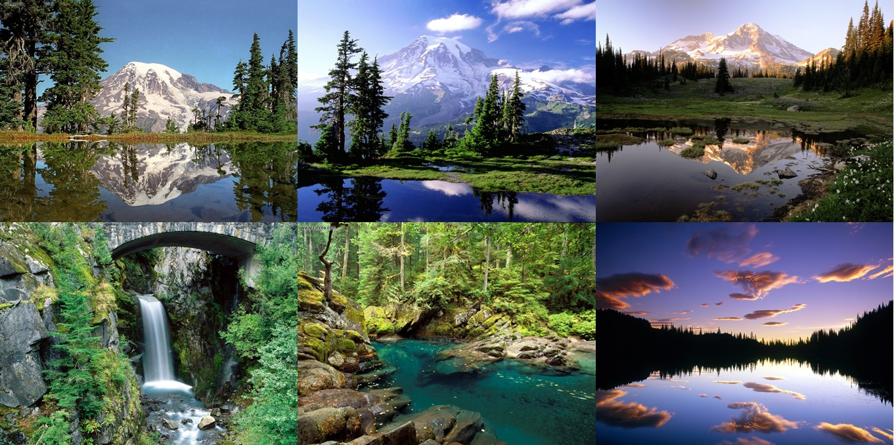
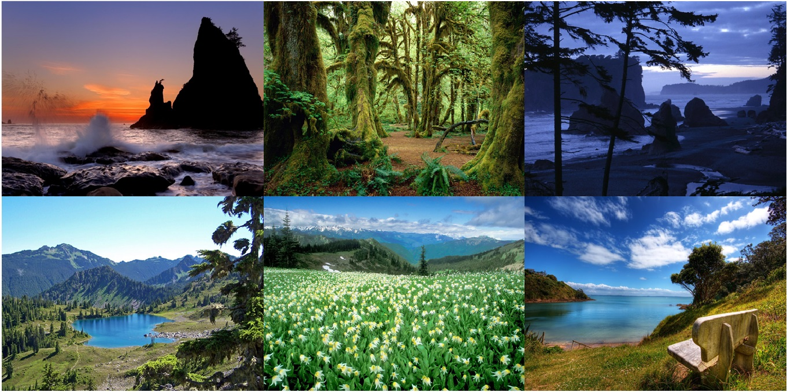
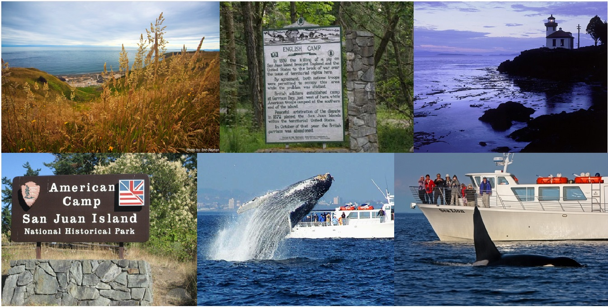
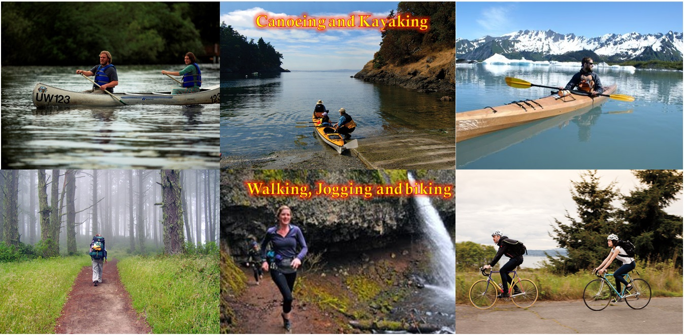
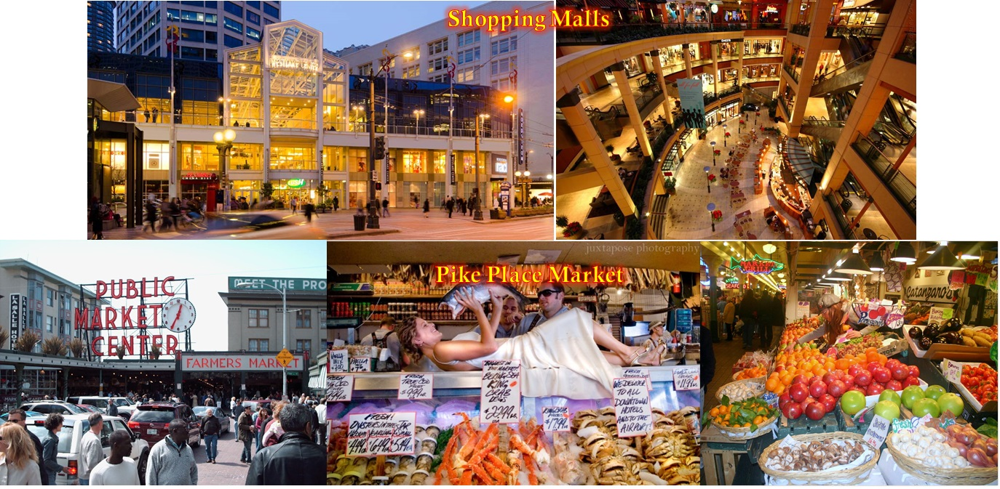
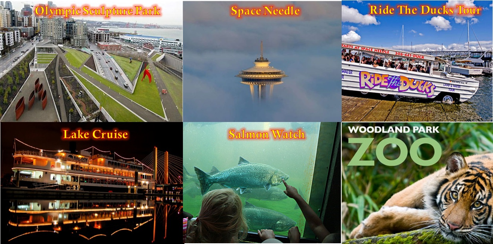
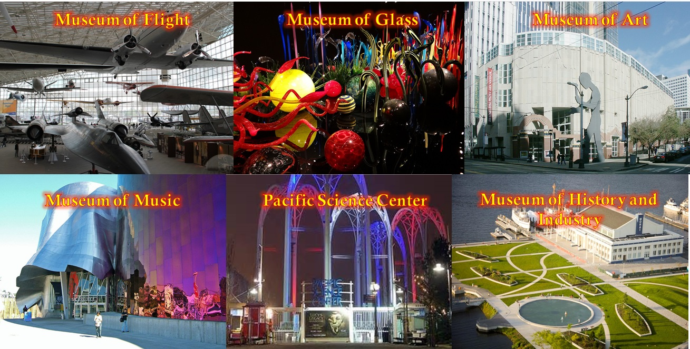
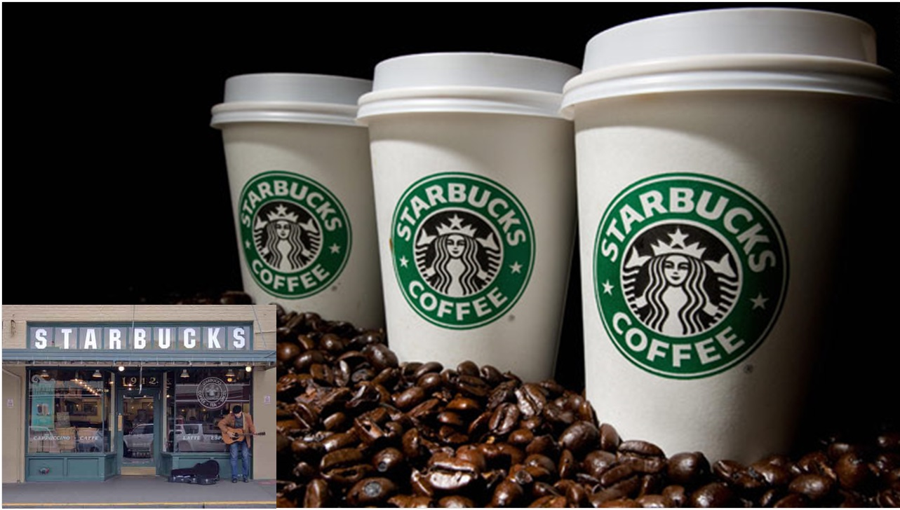
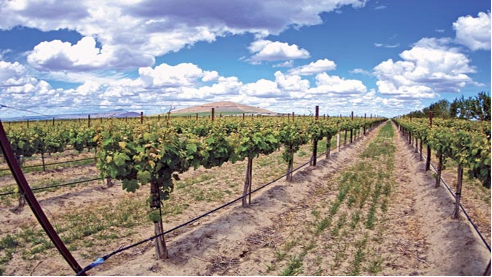
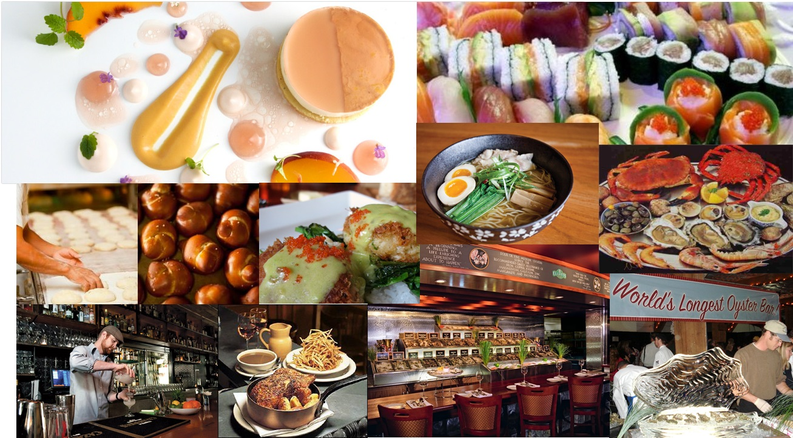

Mount Rainier National Park As one of the most famous attractions in the Seattle area, Mt. Rainier is one of the tallest peaks in the United States. It is a training destination for international climbing parties, but during mild seasons on basic routes the trek is accessible to climbers of most skill levels. 
Olympic National Park A World Heritage site, Olympic National Park is sometimes referred as "three parks in one", as it exhibits three distinct ecosystems: subalpine forest and wildflower meadow; temperate forest; and the rugged Pacific shore. 
Northern Cascade National Park Northern Cascade National Park is filled with jagged peaks, deep valleys, cascading waterfalls and glaciers. It was the home to Native Americans and a trade gateway between the east and west tribes for over 8,000 years.  San Juan Island Join a whale watching tour from Friday Harbor, San Juan Island, just 90 miles north of Seattle. Breathe the fresh island air, and experience the magnificence of seeing Orca (Killer) Whales, Bald Eagles, Seals, Sea Birds and Sea Lions in their natural environment. 
Fun in the Wild During the summer, there are lot of things that can be done in the wild, canoeing, kayaking, walking, jogging, biking, you name it. 
Fun in the City Seattle is also home to excellent shopping all over the city. In particular, Pike Place Market is a public market overlooking the waterfront in Seattle. The Market opened August 17, 1907, and is one of the oldest continuously operated public farmers' markets in the United States. 
More Fun Things To Do There are a lot more other fun things in the area, including wandering in a waterfront park, enjoying the spectacular view of the city and ocean bay on Space Needle, riding the ducks that drives both on the road and in water, cruising on Lake Washington and seeing Bill Gate's house, watching salmons returning to the local streams where they were hatched, and visiting the zoo. 
Fabulous Museums Seattle also has some very unique museums, including the museum of flight, the museum of glass, the museum of music, etc. 
Awesome Coffee Seattle is the home of Starbucks, the largest coffeehouse company in the world. It was found in 1971 at the Pike Place Market, and the first store is still here for you to visit. 
Great Wines The Seattle area is also the home of over 700 wineries! You may taste world class wine here and have the chance to see the winery facilities and meet the winemakers. 
World-Class Cuisines Seattle is a world-class culinary arena - the food scene here is "tenacious, inviting, and full of talent." Pacific Northwest cuisine generally emphasizes on fresh ingredients and is usually simply prepared. The cuisine also has noticeable influence from Asian and Native American traditions. 
Music Seattle is also legendary for producing some of the most famous and influential names in music.  |